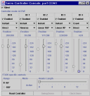

Introduction
Documentation
Platform Neutral
Metadata
Driver Release Notes
Get Involved
SourceForge
Family
|
|
Good Things
|

- Cheap, as in inexpensive.
- Simple. Takes an hour or less for somebody familiar with
the craft to put it together.
- The protocol has a relatively low overhead (for example,
SSC has an overhead of 33.3% - every command (two bytes)
has to start with the sync byte).
- Has a single power source. For me, this might have been a
deciding factor.
|
|
Bad Things
|
- Cheap, as in having limited functionality.
- Is a write-only device. It is not possible to even tell
whether it is connected to the serial port, save read the
status. Minimal functionality, like "controller ready"
status reflected on hardware flow control pin, would be
great.
- I think the guys really, really underestimate
the necessity of higher speed
communication. Consider this: on
2400 baud, it takes about 10-11
milliseconds to transmit a command
to the servo with the protocol
currently used. It allows up to 100
steps per second when controlling a
single servo.
When controlling five servos
simultaneously (maximum supported
by FT639) this figure drops down to
about 20 steps per second.
When controlling twenty five servos
simultaneously (maximum supported
by FT649) this figure drops to
about 4 (four) steps per second.
Suppose, I have a requirement of
controlling the servos in a smooth,
silent manner, or smoothly and
precisely. Does this requirement
get satisfied when I have twenty
five servos? No. Please note, that
raising the communication speed to
9600 baud is hardly enough. 19200
seems to be more or less
acceptable.
Oh well.
- More about communication speed
(thanks, Chester): there are
actully two separate issues:
latency and bandwidth. I believe in
this case the latency is negligible
(more numbers later), because the
mechanical delays in the apparatus
connected to the servo may more or
less be of comparable order with
the protocol latency. Bandwidth,
however, is an
issue here.
- Be careful with the header length
support. The lower values for the
header length make the controller
issue really short pulses that make
the servos go out of range. The
indication of that (at least for Futaba
S3003) is a high-pitch noise
(ever been to the dentist? The
kind of noise their tools have, but
higher). I don't think it is very
good for the servo, and it
definitely makes the servo
uncontrollable.
The default value for the header
length (doesn't seem to be 0,
doesn't seem to be 15 (maximum),
doesn't seem to be 7) works just
fine. Use this feature only if
everything else fails. Keep in mind
that this is a controller-wide
feature, not servo specific.
- State transitions of the hardware
controller when changing the
header length and/or range (90/180
degrees) are really unpredictable.
I've taken countermeasures against
the range changes, and gave up on
header length changes - caveat
emptor.
- Seems to be unreliable when a
massive data transfer on the
serial port is coming. When I
install a crawl transition
controller on a servo and set it
to a different position, the
controller gets flooded with data
and seems to be misinterpreting
the servo number once in a while.
As a result, wrong servo gets
positioned, and since the position
of a different servo is unrelated,
this wreaks havoc on the system.
For quite a long time I thought
that this is related to the noise
in the serial cable, but now I
tend to think that the controller
is the culprit.
|
|
Conclusion
|
Usable.
|
|

{kind=link}